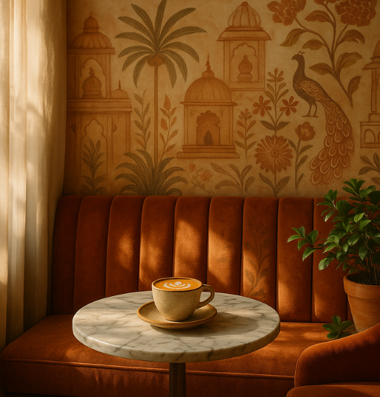
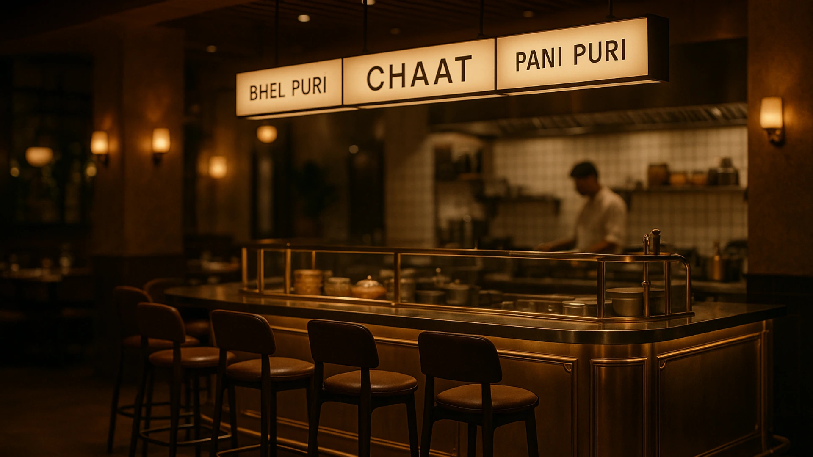
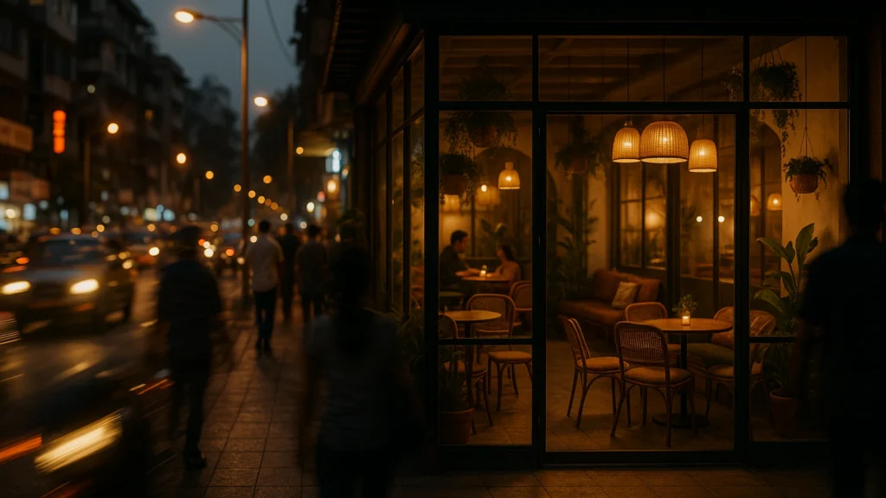
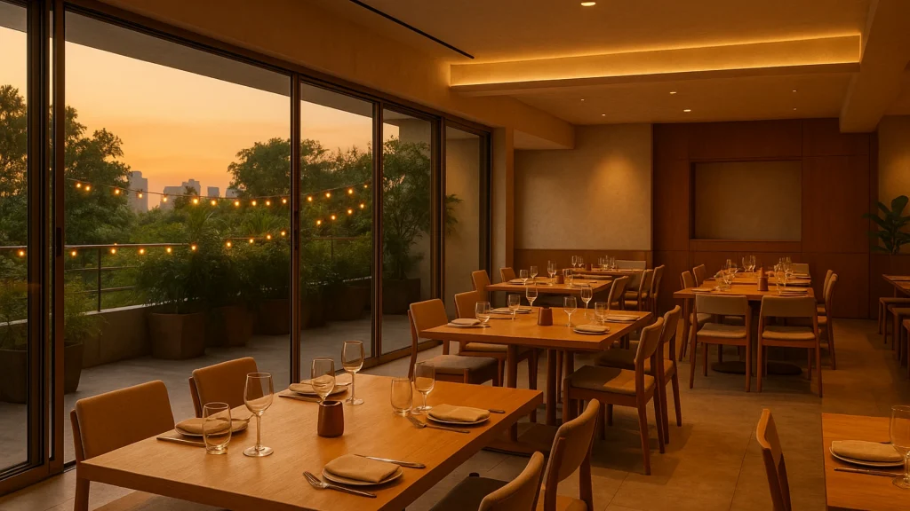
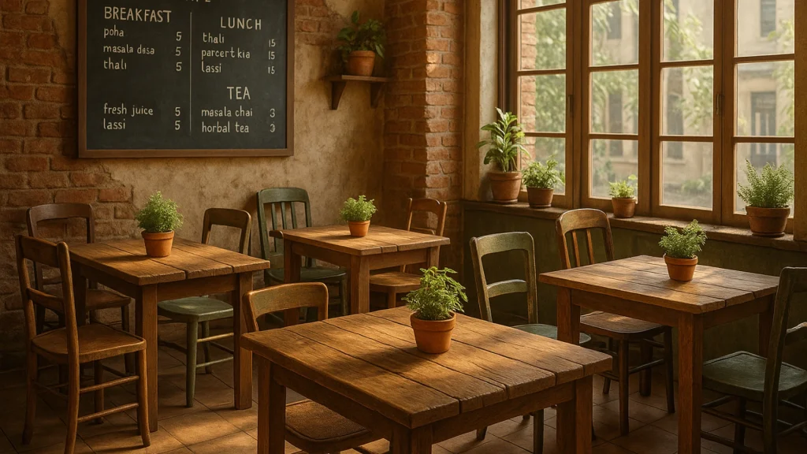
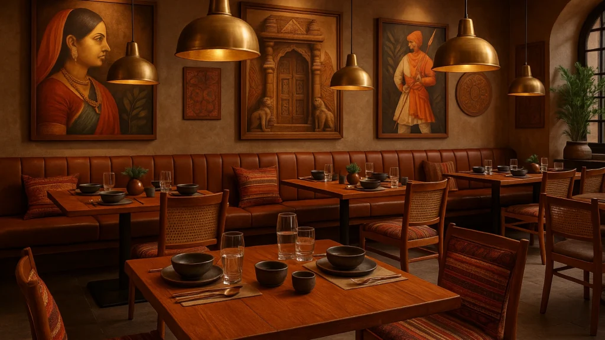

Mumbai’s culinary scene is experiencing a renaissance. From trendy cafés in Bandra to upscale restaurants in Lower Parel, the city’s food and beverage industry is redefining how we experience dining. Behind every successful establishment lies thoughtful design that goes beyond aesthetics—it’s about creating spaces that tell stories, evoke emotions, and keep customers coming back.
Understanding Mumbai’s Unique Design DNA

As an F&B interior designer working in Mumbai, you quickly learn that this city demands authenticity. The metropolitan spirit of Mumbai blends seamlessly with traditional Indian elements, creating opportunities for innovative restaurant design that resonates with diverse audiences. Whether you’re designing a contemporary bistro or a regional cuisine restaurant, the key lies in understanding your neighbourhood’s pulse.
The modern Mumbai diner seeks experiences, not just meals. They want Instagram-worthy corners, comfortable seating that encourages long conversations, and an ambience that matches their mood. This shift has transformed how F&B consultants approach space planning and design conceptualisation.
Beyond Pretty Spaces: The Strategic Role of F&B Consultants
An experienced F&B consultant in Mumbai knows that beautiful interiors are just one piece of the puzzle. Successful restaurant design requires a deep understanding of operational efficiency, customer flow, and brand positioning. The layout must facilitate seamless service while creating distinct zones for different dining experiences—whether it’s a quick coffee counter or intimate dinner seating.
Consider the challenge of designing for Mumbai’s compact spaces and high real estate costs. Every square foot must work harder, serving multiple purposes without compromising on comfort or aesthetics. This is where strategic F&B interior design becomes crucial, balancing functionality with visual appeal.
Current Trends Shaping Restaurant Interior Design in India
The Indian F&B design landscape is embracing several exciting trends. Biophilic design is gaining momentum, with restaurants incorporating living walls, natural materials, and abundant greenery—particularly relevant in a bustling city like Mumbai where diners crave connection with nature.
Local craftsmanship is having a moment too. From handwoven textiles to locally-sourced furniture, restaurants are celebrating Indian artisanship while supporting local communities. This trend extends beyond décor to include custom lighting fixtures, hand-painted murals, and artisanal serving ware that becomes part of the overall design narrative.
Flexible design concepts are becoming essential, especially post-pandemic. Restaurants need spaces that can adapt—outdoor seating that works year-round, modular furniture for private events, and technology integration that enhances rather than dominates the experience.

The Mumbai Advantage: Cultural Richness Meets Modern Sensibilities

Mumbai offers F&B designers a unique canvas. The city’s cultural diversity means you can draw inspiration from Maharashtrian heritage, colonial architecture, Bollywood glamour, or contemporary art scenes. Successful restaurant design in Mumbai often reflects this eclectic mix, creating spaces that feel both global and distinctly local.
Street food culture influences upscale dining too. Many restaurants now incorporate open kitchens, interactive food stations, and casual seating arrangements that echo Mumbai’s beloved food streets while maintaining sophisticated service standards.
Sustainability: The New Design Imperative

Forward-thinking F&B interior designers are prioritizing sustainable practices. This includes using recycled materials, energy-efficient lighting, water conservation systems, and partnering with local suppliers to reduce transportation footprint. Mumbai’s environmentally conscious diners increasingly support establishments that align with their values.
Upcycling has become both an environmental choice and a design statement. Vintage furniture, repurposed industrial elements, and reclaimed wood create unique character while reducing environmental impact.
Technology Integration: Subtle Yet Impactful

Modern restaurant design seamlessly integrates technology without letting it overshadow the human experience. QR code menus, wireless charging stations, and smart lighting systems enhance convenience while maintaining the space’s aesthetic integrity.
Mumbai’s F&B industry continues evolving, driven by changing consumer preferences and global influences. The most successful establishments will be those that master the balance between innovation and authenticity, creating spaces that feel both contemporary and timeless.
For aspiring restaurateurs, investing in experienced F&B interior design expertise isn’t just about creating beautiful spaces—it’s about crafting environments that support business success, operational efficiency, and memorable customer experiences.
The future belongs to establishments that understand design as a strategic business tool, not just aesthetic enhancement. In Mumbai’s competitive dining landscape, thoughtful interior design often makes the difference between a good restaurant and an unforgettable one.
Looking Ahead: The Future of F&B Design in Mumbai
Creating exceptional dining spaces requires expertise, creativity, and deep market understanding. Partner with experienced F&B design professionals to transform your vision into reality.
Pan-India presence | 3500+ F&B spaces delivered — Visit SprintCo’s Website